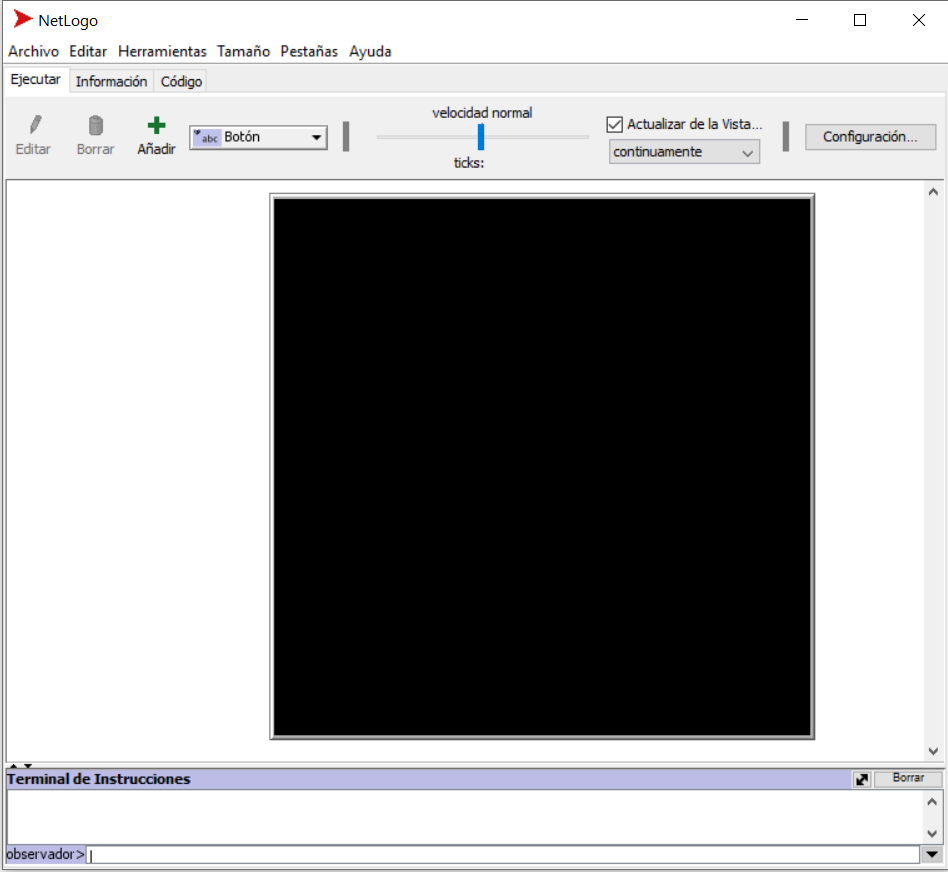
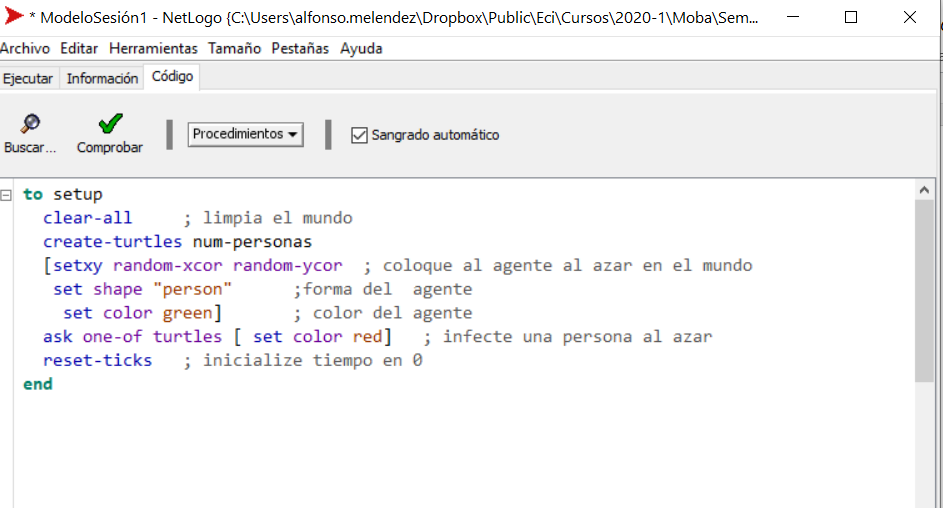
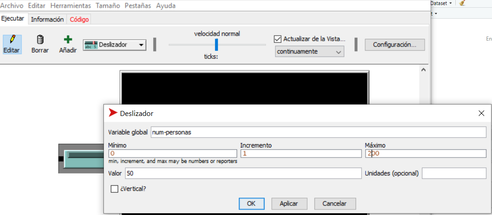
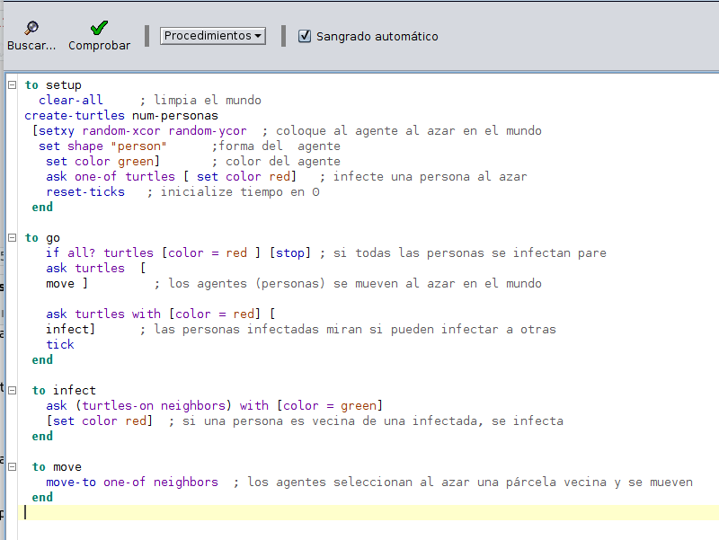
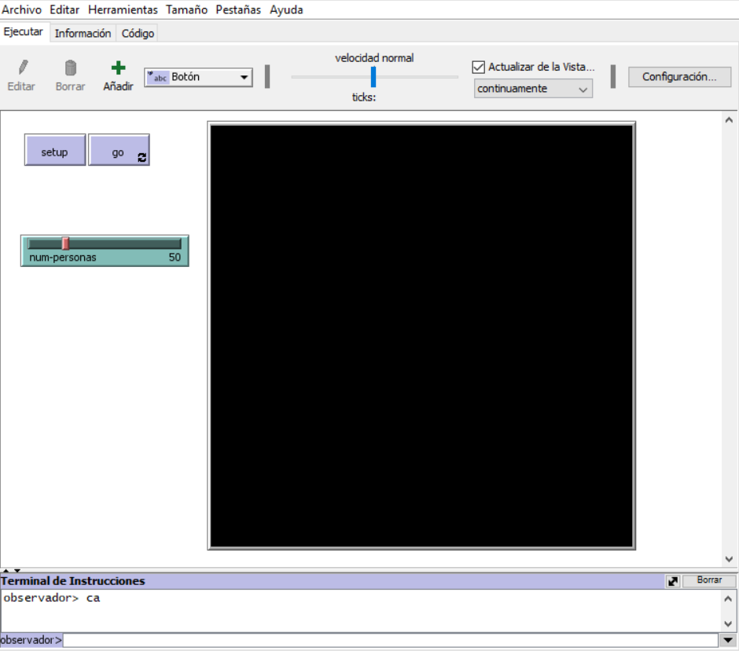

9 El Modelo SI de Infección
9.1 Construcción del Modelo
9.1.1 Introducción
En términos históricos, las enfermedades infecciosas han constituido una amenaza muy grave para la sociedad. Durante la mayor parte del siglo XX las pandemias (epidemias que se propagan por áreas y poblaciones de enorme tamaño) se habían ya considerado amenazas del pasado; la medicina moderna se había ocupado para siempre de la peste, la viruela y otras catástrofes de carácter contagioso. No obstante, los cambios ambientales actuales han propiciado cambios en las distribuciones geográficas de organismos en general y de parásitos en particular. La resistencia a los agentes antimicrobianos también se ha convertido en un grave problema mundial. Algunas infecciones, antes fáciles de tratar con antibióticos, representan ahora una grave amenaza para la salud en todas partes. El caso de Toronto (Canadá), la única ciudad de un país occidental en la que la epidemia del síndrome respiratorio agudo grave (SRAG) se ha extendido de forma local, es un claro ejemplo de ello. Por lo tanto, en años recientes, las enfermedades infecciosas como malaria, tuberculosis, VIH/SIDA, SRAG y la posibilidad del bioterrorismo han provocado de nueva cuenta un gran efecto económico y de salud, sea en países desarrollados o del tercer mundo, lo cual indica que esta amenaza sigue presente. Por ello. El uso de modelos basados en agentes es muy útil para estudiar la dinámica de transmisión y control de las enfermedades infecciosas e idear programas efectivos de control.
Describiremos e implementaremos un modelo básico de Infeccción que luego iremos extendiendo con mayores funcionalidades y paralelamente iremos realizando análisis del modelo.
9.1.2 Descripción del Modelo
Se tiene un número de personas en un espacio cerrado, las personas se mueven al azar dentro del espacio cerrado todas a una misma velocidad. Cuando una persona sana se encuentra “cerca” de una persona infectada, esta adquiere inmediatamente la infección, se asume que una persona infectada no vuelve a quedar sana.
Inicialmente solo una persona se encuentra infectada y las demás sanas
Queremos entender como evoluciona la infección en este espacio cerrado, las dimensiones del espacio cerrado son fijas y también fijaremos el número de personas infectadas inicialmente (en este caso una). El número de personas en el cuarto es variable (digamos de 50 a 200 personas) y queremos medir:
- el tiempo que transcurre hasta que todas las personas quedan infectadas
9.1.3 Pregunta
La pregunta inicial que queremos responder con el modelo es:
- ¿Qué relación hay entre el tiempo para la infección total y la densidad de personas en el cuarto?
Por ejemplo:
*¿Entre más densidad de personas hay en el cuarto el tiempo de infección total es mayor o menor?
Por ejemplo si tengo 200 personas, estas se demorarán más en infectarse comparado con 50 personas, o por el contrario las 50 personas demoran más en infectarse.
Implementando el Modelo
Abra el Programa NetLogo:

9.1.3.1 Setup
Haga clic en la pestaña de código y coloque lo siguiente:
to setup
clear-all ; limpia el mundo
create-turtles num-personas
[setxy random-xcor random-ycor ; coloque al agente al azar en el mundo
set shape "person" ;forma del agente
set color green] ; color del agente
ask one-of turtles [ set color red] ; infecte una persona al azar
reset-ticks ; inicialize tiempo en 0
endEl procedimiento setup en su orden:
- limpia el mundo : clear-all
- crea agentes de acuerdo con el deslizador num-personas : create-turtles num-personas
- se define atributos a los agentes:
- forma : set shape “person”
- color : set color green
- se selecciona un agente al azar y se infecta : ask one-of turtles [ set color red]
- Se pone el tiempo del modelo en cero : reset-ticks

Oprima el botón comprobar, aparece el siguiente error en amarillo:

Este error indica que num-personas no está definida, la mejor manera es definirla a través de un deslizador para que sea un parámetro del modedlo, entonces: Seleccione la pestaña Ejecutar y del menú que dice Botón seleccione la opción deslizador:

Haga clic a la izquierda de la pantalla negra, aparece una ventana, llénela de la siguiente manera y oprima ok.

Haga clic en la pestaña código de nuevo y oprima el botón comprobar ya no debe aparecer el error. Ahora creemos un botón pra el procedimiento setup: Selccione la opción Botón, haga clic en la parte izquierda de la pantalla y llene la ventana que aparece de la siguiente manera:
Haga clic varias veces en el botón set up para comprobar que los agentes (personas) se crean en el mundo.
9.1.3.2 Go
Una vez definido el procedimiento de setup, vamos a definir el comportamiento de los agentes, vaya a la pestaña de código y coloque lo siguiente:
to go
if all? turtles [color = red ] [stop] ; si todas las personas se infectan pare
ask turtles [
move ] ; los agentes (personas) se mueven al azar en el mundo
ask turtles with [color = red] [
infect] ; las personas infectadas miran si pueden infectar a otras
tick
end
to infect
ask (turtles-on neighbors) with [color = green]
[set color red] ; si una persona es vecina de una infectada, se infecta
end
to move
move-to one-of neighbors ; los agentes seleccionan al azar una párcela vecina y se mueven
endEste procedimiento go en su orden:
- Determina cuando el modelo para: if all? turtles [color = red ] [stop]
- pone a mover los agentes al azar en el mundo : ask turtles [move ]
- digale a los agentes rojos: infecten : ask turtles with [color = red] [infect]
¿Como infecta un agente rojo? (procedmiento infect) :
- dígale a mis agentes vecinos que estén sanos: (turtles-on neighbors) with [color = green]
- inféctense: [set color red]
La frase completa es: “vecinos mios sanos, enférmense”: ask (turtles-on neighbors) with [color = green] [set color red]
(Nota: neighbors es el conjunto de parcelas vecinas y (turtles-on neighbors) es el conjunto de agentes(personas) que están sobre esas parcelas)
Seleccione de nuevo la opción botón y haga clic a la derecha del botón setup, aparece una ventana llénela de la siguiente manera:


Haga clic en Setup y luego en Go para observar la funcionalidad del modelo.
(Nota: si el modelo corre muy rápido ajuste el deslizador de velocidad situado en la parte superior central)
Puede ensayar la funcionalidad del modelo en el siguiente applet:
9.2 Análisis del Modelo
9.2.1 La pregunta
Recordemos la pregunta planteada que queremos investigar:
- ¿Entre más densidad de personas en el cuarto, el tiempo que transcurre hasta una infección de todas las personas es mayor o menor?
Por ejemplo si tengo 200 personas, estas se demorarán más en infectarse comparado con 50 personas, o por el contrario las 50 personas demoran más en infectarse. Recuerde también que inicialmente hay solo una persona contagiada.
9.2.2 Diseñando el experimento
Vamos entonces a definir el eperimento que nos permitirá responder a la pregunta
Abra el modelo de infección que acabamos de construir y seleccione la opción Analizador de Comportamiento del Menú Herramientas
(Nota: Para mayor información del Analizador de Comportamiento puede leer el tutorial en el siguiente enlace: ??
Se necesita calcular para diferentes densidades (Número de personas en el cuarto) el tiempo de infección total, entonces vamos a seleccionar cuatro valores de densidad (509,100,150,200) y para cada una de estas densidades vamos a calcular el tiempo de infección total, realizaremos para cada una de estas densisdades 10 experimentos, entonces la ventana del analizador de comportamiento la llenamos de la forma siguiente:
Observe que le dimos un nombre al experimento, en este caso “Densidad-vs-InfeccionTotal”.
las variables a medir se colocan en la ventana “Evaluar las ejecucioes utilizando estos indicadores”, en este caso vamos a medir el tiempo para la infección total,este tiempo será el valor de la variable ticks cuando el modelo deja de correr, es el número de ticks que aparece en la parte superior central de NetLogo debajo de Velocidad Normal, cuando el modelo termina de correr.
- Al deshabilitar la opción “Evaluar las ejecuciones a cada paso” solo se registraran los datos cuando el modelo termina de correr y no en cada tick del modelo ya que lo que queremos es el tiempo final cuando todas las personas se infectan.
Listo, ahora hay que ejecutar el experimento ooprima el botón Ejecutar aparece:
Seleccione la opción Table Output y Oprima Ok.
(Nota: La opción “Simultaneous runs in paralell” indica cuántos porcesadores tiene su computador y ayuda a acelerar el proceso de generación de experimentos, la recomendación es no modificar este número)
Aparece la siguiente ventana:
Es conveniente que guarde este archivo en el mismo disrectorio donde se enceutra el Modelo de Infección NetLogo, también es conveniente que no le cambie el nombre al archivo. Una vez guardado este archivo de datos que contiene el resultado de los experimentos definidos vamos a importarlo a R (Rstudio) para realizar el análisis de los datos generados:
9.2.3 Análisis del Modelo en Rstudio
9.2.3.1 Configurando R studio
Abra el programa RStudio:

Cree un Nuevo archivo en Rstudio (Script):
Guardelo en el mismo directorio donde se encuentran el Archivo NetLogo y el archivo de datos que se acaba de generar, llame el archivo Densidad-InfTotal.R:
Ahora hay que definir el directorio de trabajo, para ello seleccione del Menú “Session”, la opción To “Source File Location” de “Set Working Directory”:

Todos los archivos que usemos, Rstudio supondrá que están en este directorio.
9.2.3.2 Leyendo los datos de NetLogo a R
Coloquemos en la Primera linea del Archivo Script que acabamos de crear lo siguiente:
library(tidyverse)
Coloque el cursor en esta ,linea y oprima el botón Run situado en la parte derecha de la ventana de Rstudio:
(Nota: Si la librería tidyverse no carga debe instalar previamnete el paquete tidyverse, para ello hay que colocar en la ventana inferior izquierda de R studio (Consola) el comando:install.packages(“tidyverse”))
Con esta linea se carga la librería que usaremos para el análisis Vamos ahora a importar los datos del experimento, coloque la siguiente linea:
data <- read_csv("ModeloBasicoInfeccionAnBas Densidad-vs-InfeccionTotal-table.csv",skip=6)
Observe que:
- “ModeloBasicoInfeccionAnBas Densidad-vs-InfeccionTotal-table.csv”, es el nombre del archivo de datos que generamos.
la opción skip=6 hay que usarla en R para todos los archuivos que importemos de NetLogo ya que NetLogo coloca an las primeras cinco lineas de los archivos quem genera la infoamción del Archivo (MetaDatos) y esta información no la usaremos en nuestro análisis.
- data es el nombre que tendra el archivo en R de los datos que vamso a importar
read_csv es el comando para leer archivos de datos este comando es un comando muy potente para leer datos y es parte de la librería tidyverse.
Coloque el cursor en la linea que acabamos de escribir y oprima el botón Run.
Si todo salió bien, Rstudio lee el archivo NetLogo (data) y lo coloca en la parte derecha de la pantalla (data, 40 obs of 4 variables). Si hace clic en data, puede visulizar en la parte izquierda el archivo de datos:
Listo!! Ya tenemos los datos en Rstudio, puede observar los datos en la tabla y comenzar a ver cuál puede ser la respuesta a nuestra pregunta, pero es mejor usar unos pocos comandos de la librería tidyverse para analizar y visualizar los datos de una mejor manera.
9.2.3.3 Limpiando los datos
Cambiemos los nombres de las columnas, coloquemos en R y oprimanos el botón Run:
colnames(data) <- c("corrida","personas","paso","ticks")
El nombre de las columnas cambia:
Agrupemos nuestros datos de acuerdo al número de personas y generemos los promedios de infección total y las desviaciones:
data %>% group_by(personas) %>%
summarise(promInf=mean(ticks),
desvInf=sd(ticks)) -> datag
- group_by agrupa los datos de acuerdo al número de personas
- summarise calcula promedio y desviaciones de los datos agrupados
- estos nuevos datos se colocan en una nueva tabla (datag)
La tabla datag contiene la información que necessitamos graficar:
Construyamos un gráfico de estos datos:
ggplot(datag)+
geom_point(aes(personas,promInf))+
geom_errorbar(aes(personas,promInf,ymax=promInf + desvInf,ymin=promInf - desvInf))
En esta gráfica observamos claramente que a mayor densidad menor tiempo de infección (O sea entre más personas hay en el cuarto más rápido se infectan)
9.2.4 Un Segundo Análisis (Infección Ambiental)
leer datos
## Parsed with column specification:
## cols(
## `[run number]` = col_double(),
## variant = col_character(),
## `disease-decay` = col_double(),
## `num-infected` = col_double(),
## `num-people` = col_double(),
## `connections-per-node` = col_double(),
## `[step]` = col_double(),
## ticks = col_double()
## )renombras
filtrar
agrupar
Contour 2D
mat <- acast(datag,decay ~ personas,value.var="pticks")
ejey <- as.numeric(rownames(mat))
ejex <- as.numeric(colnames(mat))
fig <- plot_ly(
x=ejex,y=ejey,z=mat,type="contour" )
figContour 3D
library(reshape2)
library(plotly)
mat <- acast(datag,decay ~ personas,value.var="pticks")
ejey <- as.numeric(rownames(mat))
ejex <- as.numeric(colnames(mat))
fig <- plot_ly() %>%
add_surface(x=~ejex, y = ~ejey, z = ~mat) %>%
layout(title="decay-personas vs ticks",
scene=list(
xaxis=list(title="personas"),
yaxis=list(title="decay"),
zaxis=list(title="ticks")
))
fig